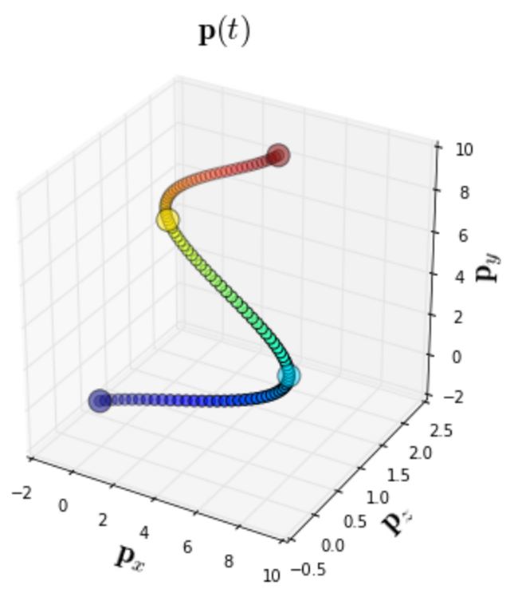
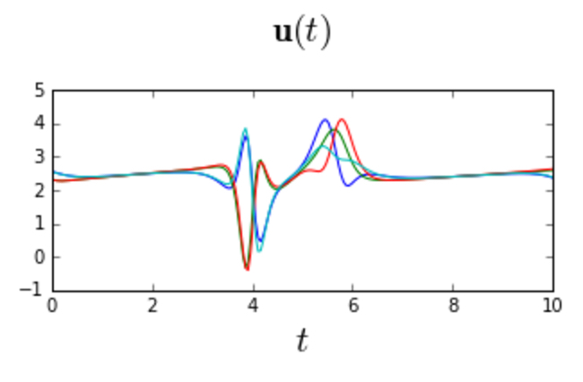
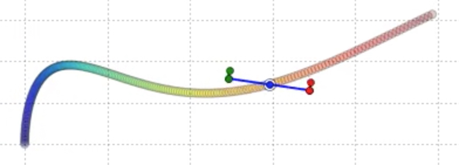
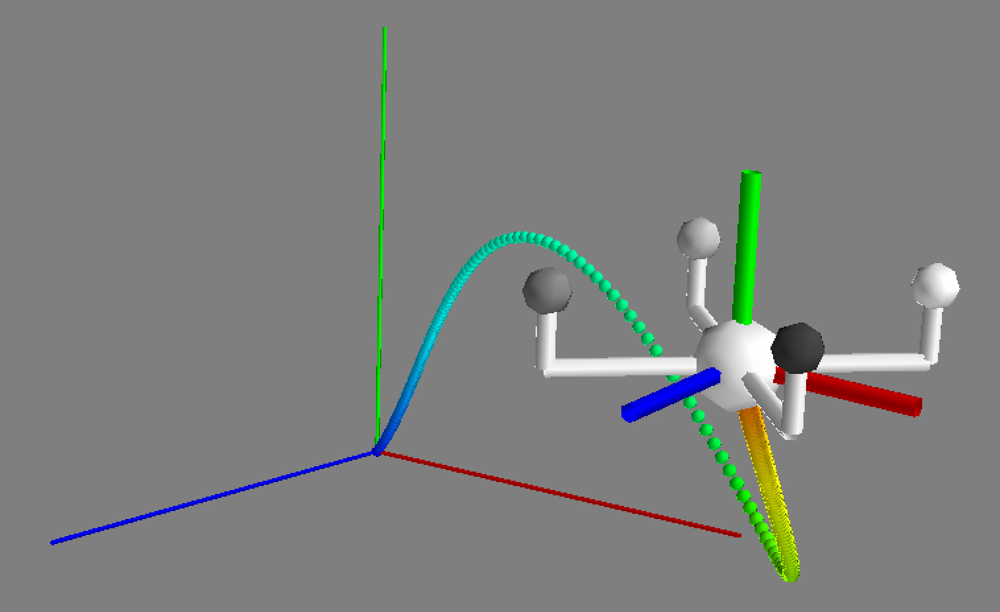

|
|
Mike Roberts |
Biography
I'm a research scientist at Apple. I have recently become interested in using photorealistic synthetic data for computer vision.
In 2019, I received my PhD from Stanford University, where I was advised by Pat Hanrahan. My dissertation work was at the intersection of computer graphics, robotics, and computer vision, where I focused on using drones to support human creativity. During my graduate studies, I interned at Microsoft Research and Skydio. Before going to Stanford, I was a research fellow at Harvard University, where I was advised by Hanspeter Pfister. In 2012, I worked with John Owens and David Luebke to develop the Introduction to Parallel Programming course at Udacity.
For an overview of my research, see this talk from TEDxBerkeley 2017.
Selected Publications
A complete listing of my publications is available on Google Scholar.

|
Trajectory Optimization Methods for Drone Cameras |
|
Submodular Trajectory Optimization for Aerial 3D Scanning |
|
|
Generating Dynamically Feasible Trajectories for Quadrotor Cameras
Featured in the Highlights of SIGGRAPH session at the FMX Festival 2017 |
|
|
An Interactive Tool for Designing Quadrotor Camera Shots Featured in the SIGGRAPH Asia 2015 Technical Papers Trailer |
|
|
Saturated Reconstruction of a Volume of Neocortex |
|
|
Large-Scale Automatic Reconstruction of Neuronal Processes from Electron Microscopy Images |
|
|
Design and Evaluation of Interactive Proofreading Tools for Connectomics |
|
|
Neural Process Reconstruction from Sparse User Scribbles |
|
|
A Work-Efficient GPU Algorithm for Level Set Segmentation |
Software
Flashlight: A Python Library for Analyzing and Solving Quadrotor Control Problems
Flashlight is a lightweight Python library for analyzing and solving quadrotor control problems. Flashlight enables you to easily solve for minimum snap trajectories that go through a sequence of waypoints, compute the required control forces along trajectories, execute the trajectories in a physics simulator, and visualize the simulation results. Flashlight also makes it easy to simulate external disturbances, and to recover from those disturbances using time-varying LQR feedback control. Flashlight includes physical models for 2D quadrotors, 3D quadrotors, and 3D quadrotor cameras.
|  |  |  |  |
Personal
Before coming to Stanford, I used to DJ in front of hundreds of people every weekend. I was a resident at The Republik and The Bamboo Tiki Room in Calgary, Canada. The Republik and the Bamboo were voted the 2nd and 3rd best places to dance in the FFWD Best of Calgary 2010. More recently, I won a national DJing competition to perform at Glowchella 2013 in San Francisco, and I have subsequently opened for The Chainsmokers, Martin Solveig, and several other notable international artists.
I think of my sound as a funky chunky soul stomp bigbeat boogaloo mashup of timeless dance music, i.e., imagine what it would sound like if James Brown, Ray Charles, The Beatles, Fatboy Slim, and Daft Punk all took acid together and played a sweaty warehouse primetime party set at the Apollo Theater Harlem NYC circa 1969. You can listen to a mix here.